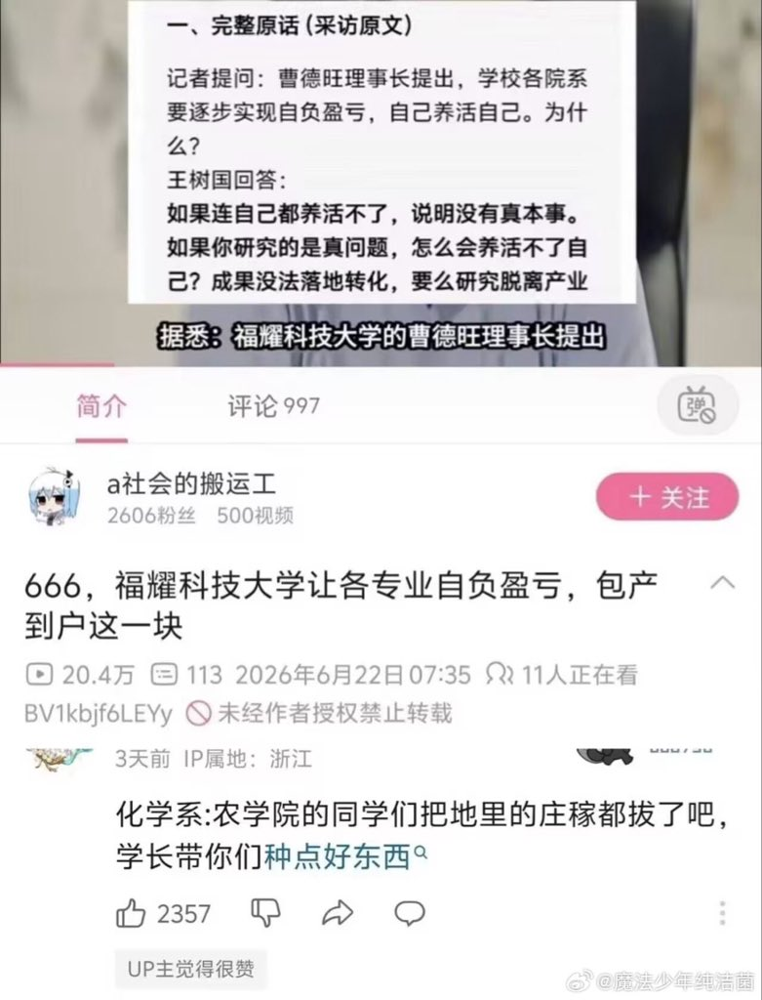

日落龙舌兰🏳️⚧️🏴 🚷
@0rbital_obit
@haku_dabai 曹德旺本来说后续5年投资100亿，现在不给了。你让全校300个教授，50个学生就算真的全去种鸟片和东方树叶，搞结晶化，在缅北敞开了卖，一年能赚够20个亿吗？ 20亿也就够一个双非院校一年的，不是曹德旺和王树国原先打算打造的超过C9的“一流院校”

haku-大白
@haku_dabai
白姐带你们种点好东西 https://t.co/fpWxXLP0jv